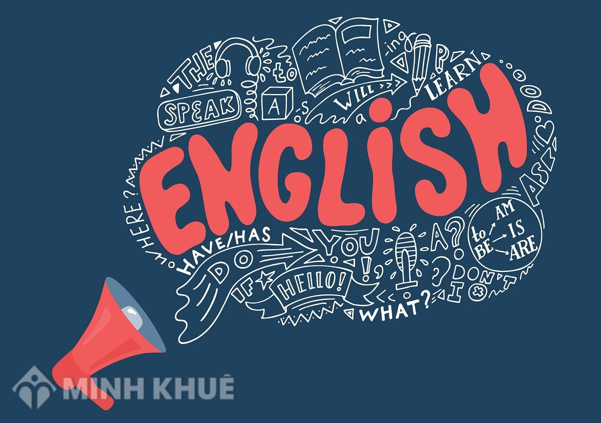

TIẾNG ANH: GIÚP PHÁT TRIỂN KỸ NĂNG GIAO TIẾP

Nói và viết về sở thích cá nhân, lý do yêu thích và lợi ích của sở thích đó.
My hobby is playing the guitar. I started it two years ago. I usually play it in the evening after finishing my homework. I find it very relaxing. It helps me become more creative.